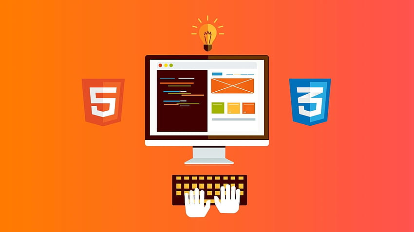

Profile
Self-motivated, energetic Electronic/Telecommunication Technician seeking a position with company to both enhance my skills in this profession and to help expand the growth of company. Availability full time a week. Weekends and holidays anytime.

Skills
- Git and GitHub Repository Creation
- Hypertext Markup Language (HTML)
- Cascading Style Sheets (CSS)
- JavaScript (JS)